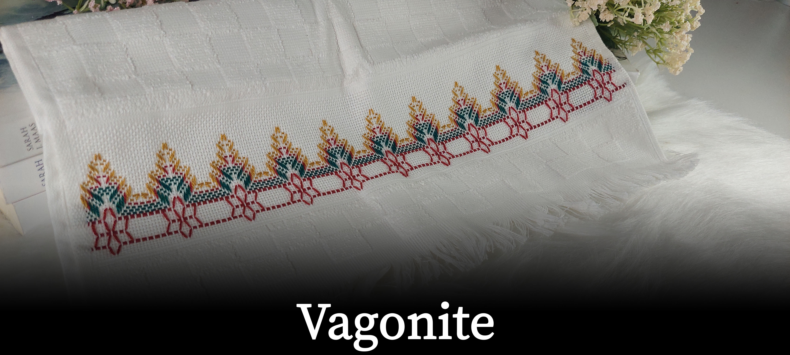

No Ateliê Mari&Art, transformamos linhas e tecidos em verdadeiras obras de arte. Especializados em bordados personalizados, cada peça é cuidadosamente criada para refletir a beleza e a singularidade de cada cliente. Com técnicas tradicionais e um toque moderno, oferecemos produtos exclusivos, desde enxovais e acessórios até presentes especiais que encantam e emocionam. Nossa missão é trazer mais cor e delicadeza ao seu dia a dia, através da arte do bordado. Venha conhecer nosso trabalho e se encantar com a magia dos detalhes!
Olá! Sou Mariana, a criadora por trás do Ateliê Mari&Art. Com 28 anos, sou apaixonada por gatos, pelo meu namorado, animes, jogos, kpop, doramas e, claro, pelo maravilhoso mundo dos bordados. Desde cedo, descobri minha paixão por transformar simples tecidos em obras de arte únicas e cheias de significado. Cada ponto bordado é feito com amor e dedicação, refletindo minha personalidade criativa e detalhista. No meu ateliê, busco unir a tradição do bordado com inspirações modernas, criando peças que contam histórias e encantam. Venha conhecer meu trabalho e compartilhar dessa paixão comigo!